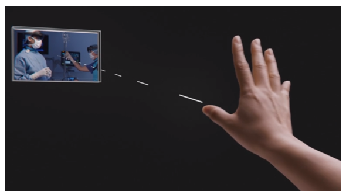
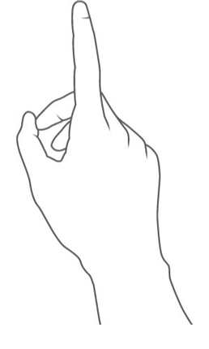
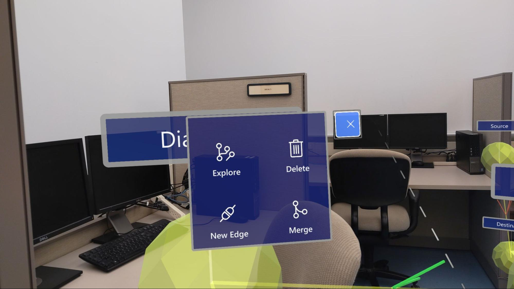
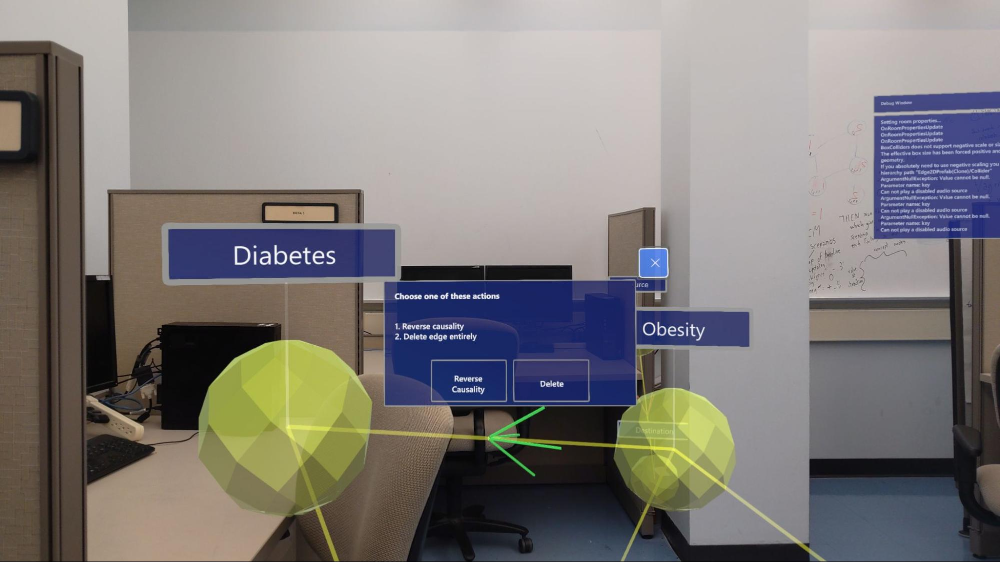
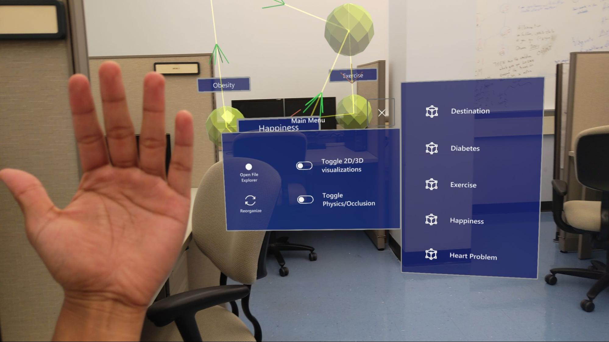

1) Hand ray
- Hold your hand in front of you, with your palm facing away
- A laser pointer (hand ray) appears
- You can now interact with the target on which the pointer lands

2) Base Gesture - How to grab onto an object?
- This is called “air tapping”
- Use your index finger and thumb, tap your finger down

3) Move a Hologram

4) Move a Hologram from a distance
- Notice where the white circular dot in the end of the hand ray lands on
- Notice how the dotted hand ray changes into solid when you grab onto object

5) Using menus


6) Menus (Nodes and Edges)

7) Node Menu Explanation
- Explore: Show neighboring nodes (shown below)
- Delete: Delete node and associated entities
- New Edge
- Merge nodes: Combine this node into another

8) Edge Menu Explanation
- Reverse the causality (positive VS negative)
- Delete the edge

9) Hand Menu

10) Scrolling

11) Finding a node

12) Merging a node

13) Edge creation

14) Exploring the neighbors